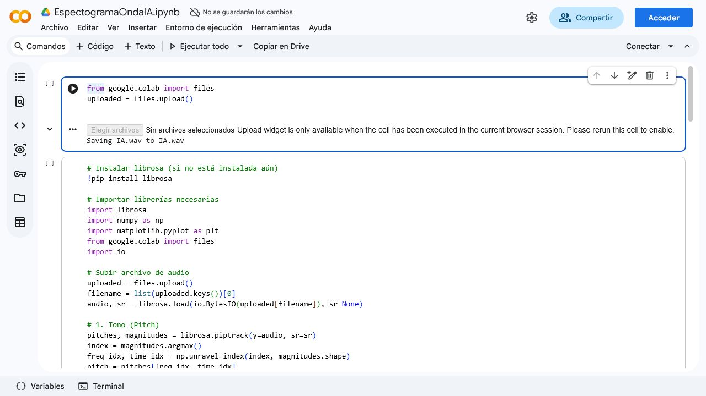

piptrack.
Procesamiento de audio
Este ejercicio toma un archivo de audio cargado manualmente y construye una lectura mas completa: tono dominante, intensidad promedio, MFCC, duracion, primeras frecuencias de la FFT, forma de onda, espectrograma logaritmico y visualizacion de coeficientes.
piptrack.

Captura del cuaderno de Colab asociado a este ejercicio.
Extraccion
El caso no hace una sola medicion. Construye una descripcion bastante completa del audio, lo cual es util para tareas posteriores de clasificacion, comparacion o interpretacion.
Se usa librosa.piptrack y se localiza la frecuencia asociada al mayor valor de magnitud.
La energia promedio se resume con librosa.feature.rms, una medida util para volumen.
Los MFCC capturan color espectral mientras que get_duration reporta la longitud total del audio.
Visualizacion
Este tipo de ejercicio muestra bien que puedes conectar calculo numerico con lectura visual, algo muy valioso cuando se trabaja con senales y analitica aplicada.
Muestra la amplitud a lo largo del tiempo y sirve como primera vista de la senal.
Permite ver como cambia la energia segun tiempo y frecuencia usando una escala mas interpretable para audio.
Hace visible la evolucion temporal de los coeficientes, lo que ayuda a comparar regiones del audio.
Las primeras frecuencias impresas sirven como lectura inicial del contenido espectral de la senal.